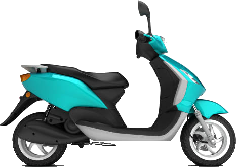

Skuter / motosikal
Minyak enjin
selalu tukar.
Minyak gear?

kotak gear belakang
Dalam kotak gear
Gear & galas
berputar laju
gear
galas
Musuh gear
3 benda ni
makan gear
kehausan
karat & kakisan
haba & ricih
Kenalkan
TOYO-G
Scooter Gear Oil
SAE 80W-90
API GL-5
MIL-L-2105
100ml
untuk semua jenis
skuter & motosikal
Apa ia buat
Satu lapisan
pelindung
✓lindung gear & galas
✓halang kehausan & hakisan mikro
✓lindung karat & kakisan
✓stabil ricih & haba tinggi
Hasilnya
Pecutan
lebih lancar*
minyak tahan
lebih lama
Nak satu?
Tekan
BEG KUNING